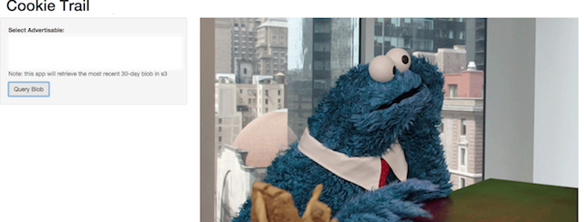
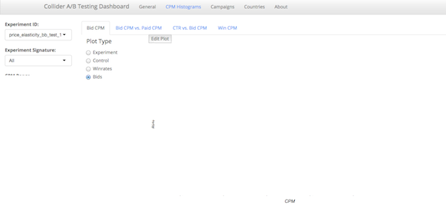
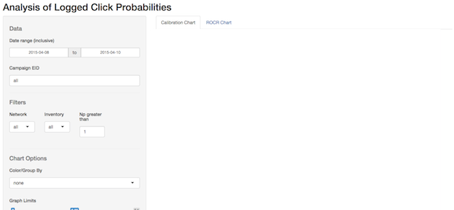
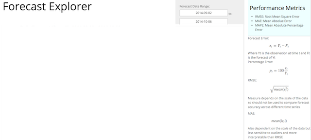
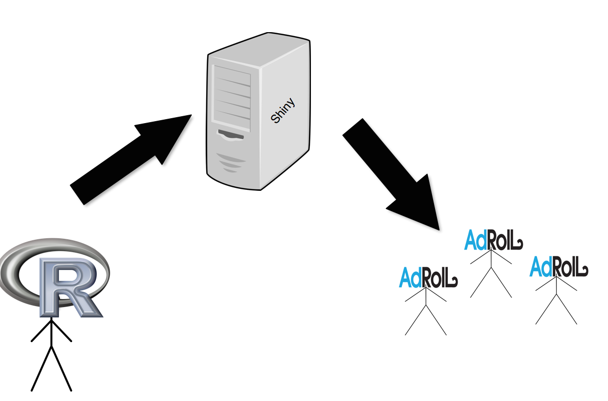
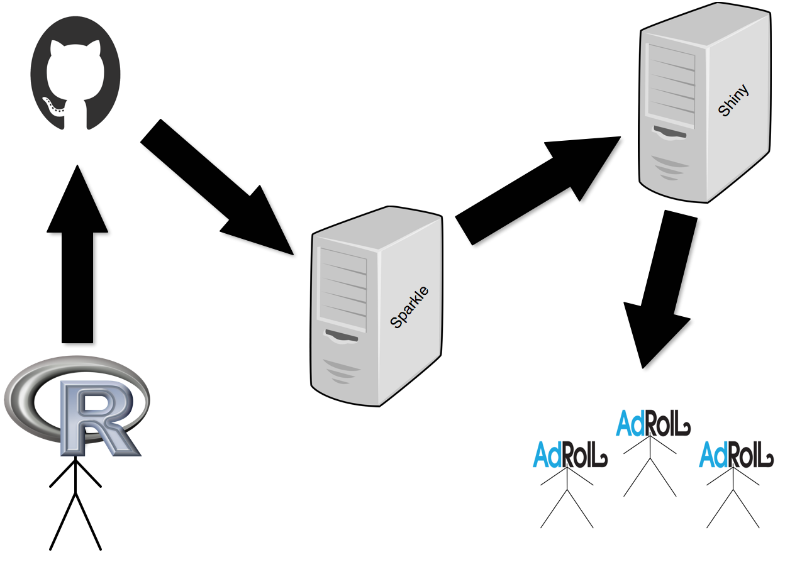
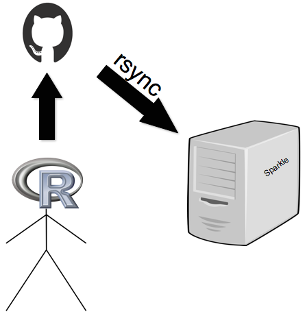

Sparkle
Deploying Shiny Apps @
About Us
- Ad Retargeting
- Self Service Platform
- RTB
Our Data
- 100 TB raw data / day
- 50B events logged / day
- 4PB total (compressed)


Adoll
- Predictive Modeling
- Internal R Packages
- ETL and Presto
- R + Docker
- Shiny
Open Positions
- Sr. Data Scientist
- Sr. Business Intelligence Analyst
- Product Analyst
Shiny At AdRoll
   (old) Shiny Workflow
(old) Shiny Workflow
- Doesn't Promote Version Control
- Requires SSH
- Updating App Data Can Be Tricky
- Ugly Index Page
shinyapps.io
(RStudio's awesome Shiny hosting service)
Sparkle
Goals
- Enforce Version Control
- Remove Barriers to Shiny Development
- Improve App Uptime
Sparkle Workflow
How?
Build Automation


Provides endpoints for the tasks that we want to automate:
- GitHub Sync
- Server Restart
- App Data Refresh
- App Directory Move
Example: GitHub Sync
- rsync
- Brew/Knitr
#1 Rsync
#2 Brew + Knitr
Brew: R package for report templating
Knitr: generates html from brew template with knit2html()
Want to learn more about AdRoll?
bryan.galvin@adroll.com